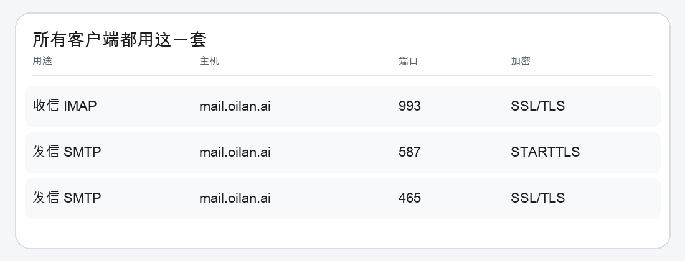
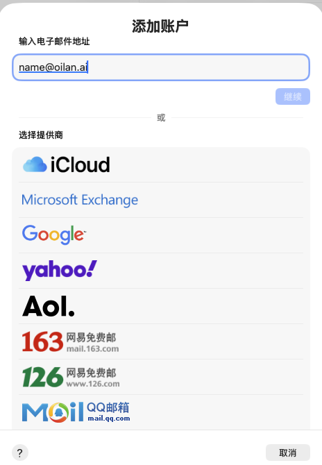
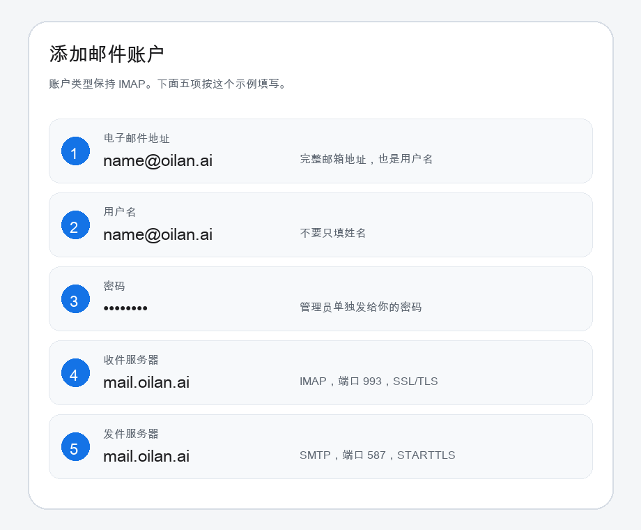

这份手册给使用 @oilan.ai 邮箱的人。管理员把邮箱地址和密码单独发给你之后，按下面的步骤在自己的电脑或手机上添加账户。
用户名一律填完整邮箱地址，例如 name@oilan.ai。不要只填姓名。
Outlook、Mac 系统“邮件”、iPhone 邮件、Thunderbird、Foxmail、QQ 邮箱和网易邮箱大师都用这一套。不需要专有协议。

服务器使用 *.oilan.ai 正式证书。第一次添加时，系统如果询问是否信任，确认证书名称是 *.oilan.ai 后再继续。

name@oilan.ai。mail.oilan.ai。系统窗口里如果还写着 mail.example.com，必须改掉。
如果窗口提示“无法验证账户名或密码”，先核对这三处：
mail.oilan.ai。mail.oilan.ai，用户名填完整邮箱，密码再填一次。mail.oilan.ai，用户名和密码也填完整邮箱和同一组密码。mail.oilan.ai，端口 993，加密 SSL/TLS。mail.oilan.ai，端口 587，加密 STARTTLS。也可以改用 465 和 SSL/TLS。Foxmail：选择“其他邮箱”，再选“手动设置”。收件服务器选 IMAP，发件服务器选 SMTP，主机、端口和加密按上面的表填写。
QQ 邮箱：选择“添加其他邮箱”，协议选 IMAP。不要用 QQ 账号登录这个邮箱。服务器填 mail.oilan.ai。
网易邮箱大师：选择“添加其他邮箱”，再选 IMAP。收信使用 993 和 SSL/TLS，发信使用 587 和 STARTTLS，或 465 和 SSL/TLS。
Thunderbird：新建账户时选择“手动配置”。IMAP 使用 993 和 SSL/TLS，SMTP 使用 587 和 STARTTLS。用户名填完整邮箱地址。
收信走 IMAP。邮件保留在服务器上，手机和电脑看到的是同一封信。
发信必须登录。发件人要和登录的邮箱一致。新邮件写完后点发送。对方如果收不到，先看自己的发件箱或垃圾邮件，再把退信原文交给管理员。
写给 support@oilan.ai 的信会留在 support 邮箱，并同时出现在已登记的同事邮箱里。这是服务器上的抄送，不需要发信人再逐个添加收件人。
| 现象 | 处理 |
|---|---|
| 提示密码错误 | 用户名改成完整邮箱，再重新输入密码。 |
| 服务器仍是 mail.example.com | 收件和发件都改成 mail.oilan.ai。 |
| 选成了 QQ、163 或 iCloud | 返回，改选“其他邮件账户”。 |
| 能收信但不能发信 | 发件端口用 587 和 STARTTLS，或 465 和 SSL/TLS，并打开 SMTP 登录验证。 |
| 证书提示 | 确认名称是 *.oilan.ai 后再信任。 |